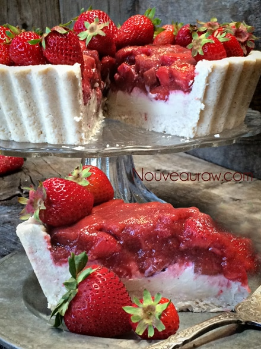

Ruby Red Strawberry Rhubarb Cream Pie

~ raw, vegan, gluten-free ~
Oh boy, strawberry and rhubarb season is upon us! One of my very favorite combos. And goodness, when paired with the creamy vanilla bean filling… well shoot, I just might need to invest in some pants with an elastic band.
Pie, plus more!
This recipe makes extra vanilla cream batter. So use this as an opportunity to make several different desserts for the week. Make this pie, and then with the leftover filling, pour it into small cups to eat like a custard. You can also layer the vanilla bean filling with granola, creating parfaits. Or if you don’t want the extra, you can cut the filling recipe in half. I prefer to prepare foods once and enjoy them many times. :)
Before diving into this recipe, we need to start by making the Marinated Rhubarb and Strawberry. If you really want to develop the flavors, it will require at least 24 hours to marinate. You can speed up the process by placing the mixture in a glass bowl and then slide it into the dehydrator set at 115 degrees (F) for 6-8 hours, or until the rhubarb starts to soften and the flavors infuse the fruit. You will need a dehydrator that has an open cavity, such as the Excalibur.
Why I add sunflower lecithin:
This ingredient is optional, but I wanted to share why I think it is great to add. Sunflower lecithin is made up of essential fatty acids and B vitamins. It helps to support healthy function of the brain, nervous system, and cell membranes. It also lubricates joints and helps break up cholesterol.
It comes in two forms, powder and liquid. I prefer the raw sunflower lecithin., it has a thick, dark, and sticky consistency with a nutty-seedy rich aroma and surprisingly pleasant flavor. Setting aside all the nutritional benefits, it is a natural emulsifier that binds the fats from nuts with water creating a creamy consistency.
I think this pie is just stunning in color. A sure sign of Spring. I hope that you are able to make it. I would love to hear from you. Many blessings, amie sue
Yields 9 1/2” deep crust tart pan
Crust:
- 1 cups raw oat flour, homemade
- 3 1/3 cup shredded coconut
- 1/2 tsp Himalayan pink salt
- 1/2 cup water
- 1/2 cup coconut oil, melted
- 1/4 cup maple syrup
- 1/2 tsp vanilla extract
Marinated Rhubarb and Strawberry Pie filling:
Slurry:
Vanilla bean filling:
- 3 cups raw cashews, soaked 2+ hours
- 1 cup water
- 1/4 cup lemon juice
- 3/4 cup maple syrup
- 2 tsp vanilla extract
- 1/4 tsp Himalayan pink salt
- 3/4 cup coconut oil, melted
- 3 Tbsp sunflower powder lecithin
 Preparation:
Preparation:
Crust:
- Combine the oats flour, shredded coconut, and salt in the food processor, fitted with the “S” blade. Process until it is well broken down and mixed.
- Add water, coconut oil, sweetener, and vanilla. Process until the batter is well mixed and sticks together when pinched.
- Line the removable bottom of the pan with plastic wrap. If you are using a solid baking dish, lightly grease with coconut oil.
- Place the crust mix in the center of the pan, then loosely move it around, covering the bottom. Start pressing the crust into the sides of the pan, then do the bottom of the pan. Press the crust firmly and evenly. Set aside.
Marinated Rhubarb and Strawberry Pie filling:
- After making the Marinated Rhubarb and Strawberry, pour it into a mesh strainer to separate the juice of the marinade from the fruit. Set the juice aside. Place the fruit in a medium bowl. Set aside.
Slurry:
- In the blender combine the strawberries, 2 Tbsp of marinating juice from the rhubarb and strawberry recipe, maple syrup and psyllium powder. Blend until creamy smooth.
- Pour the slurry into the bowl with the fruit, stir and place in the fridge for several hours or overnight to thicken.
Vanilla bean filling:
- Drain the soaked cashews and discard the soak water.
- In a high-powered blender combine the; cashews, water, lemon juice, sweetener, and vanilla.
- Due to the volume and the creamy texture that we are going after, it is important to use a high-powered blender. It could be too taxing on a lower-end model.
- Blend until the filling is creamy smooth. You shouldn’t detect any grit. If you do, keep blending.
- This process can take 2-4 minutes, depending on the strength of the blender. Keep your hand cupped around the base of the blender carafe to feel for warmth. If the batter is getting too warm. Stop the machine and let it cool. Then proceed once cooled.
- You can use a different liquid sweetener if you are not comfortable with maple syrup. Just be aware of the different flavors and colors that the sweetener might impart to the cake.
- With a vortex going in the blender, drizzle in the coconut oil, and then add the lecithin. Blend just long enough to incorporate everything together. Don’t over-process. The batter will start to thicken.
- What is a vortex? Look into the container from the top and slowly increase the speed from low to high, the batter will form a small vortex (or hole) in the center. High-powered machines have containers that are designed to create a controlled vortex, systematically folding ingredients back to the blades for smoother blends and faster processing… instead of just spinning ingredients around, hoping they find their way to the blades.
- If your machine isn’t powerful enough or built to do this, you may need to stop the unit often to scrape the sides down.
- Pour 1/2 – 3/4 of the filling in one crust pan and the remaining in custard cups for another night dessert.
- Gently tap the pan on the counter to remove any air bubbles.
- Chill in the freezer for 4-6 hours, then add the fruit slurry. Place in the fridge for 12 hours or overnight.
- You can skip freezing the vanilla bean layer, but if you don’t, the fruit slurry will dent into the vanilla bean layer. There isn’t anything wrong with this, just depends if you want nice clean lines.
- Pour the Marinated Rhubarb and Strawberry Pie filling on top and gently spread evenly across the surface of the pie.
- If you made little custard cups, it isn’t necessary to put those in the freezer, just chill overnight in the fridge.
- Store the cheesecake in the fridge for 3-5 days or up to 3 months in the freezer. Be sure that they are well sealed to avoid fridge odors.
I made this pie again but instead of using my fluted pan, I used a Springform pan.
I also changed up how I decorated the top. I love how one dessert can be made
in so many different ways.
© AmieSue.com